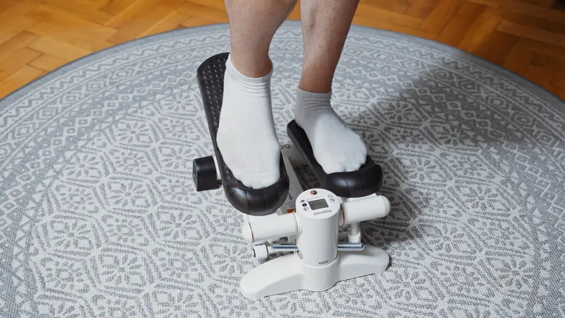
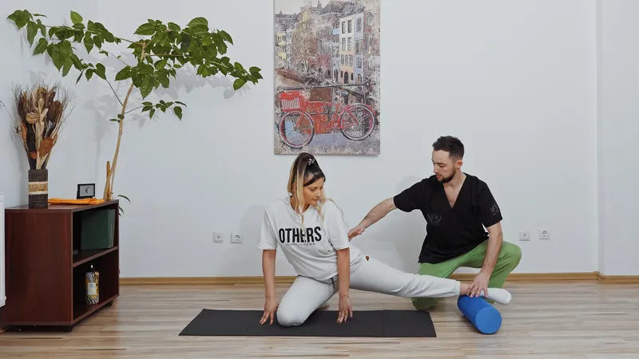
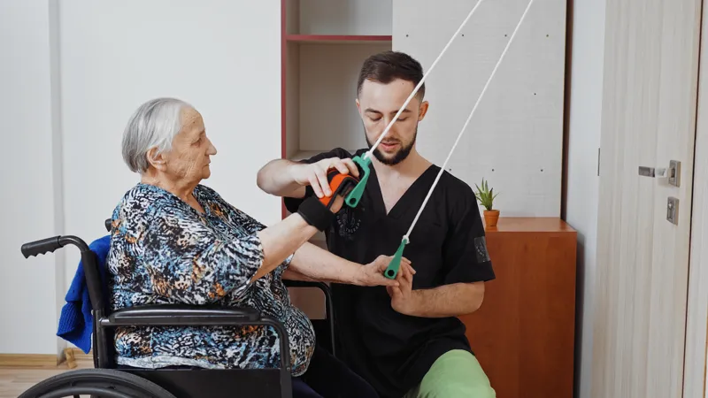
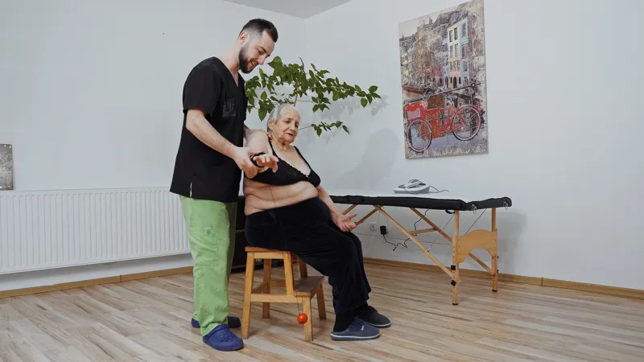
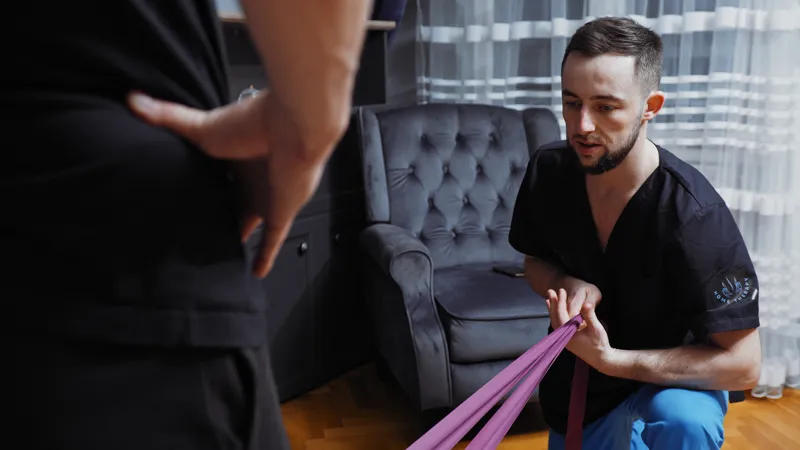

Kinetoterapie
Recuperare prin mișcare specifică și adaptată, ghidată pas cu pas pentru facilitarea vindecării, corectarea posturii, creșterea mobilității și redobândirea independenței funcționale a corpului.
Ce este Kinetoterapia și Cum Te Ajută?
Kinetoterapia (sau terapia prin mișcare) reprezintă gimnastica medicală adaptată nevoilor specifice ale organismului dumneavoastră. Prin exerciții fizice individualizate, kinetoterapia acționează la nivel structural și funcțional pentru reabilitarea aparatului locomotor, cardiovascular sau respirator.
Principalele domenii de intervenție și beneficii includ:
- Recuperare post-operatorie: esențială după intervenții precum proteze de genunchi sau șold, reconstrucție de ligamente încrucișate (LIA) sau suturi de menisc.
- Recuperare post-traumatică: după fracturi, luxații, entorse sau rupturi fibrilare musculare, redând forța și unghiurile fiziologice de mișcare.
- Corectarea deviațiilor de postură: programe specifice pentru cifoză, scolioză, lordoză sau asimetrii musculare, atât la adulți, cât și la copii.
- Tratamentul afecțiunilor coloanei: managementul herniilor de disc (lombară/cervicală) în fază acută sau cronică, evitând în multe cazuri intervenția chirurgicală.
- Îmbunătățirea echilibrului și coordonării: gimnastică adaptată pentru vârstnici pentru prevenirea căderilor accidentale și menținerea tonusului.
Fiecare ședință de kinetoterapie la domiciliu în Oradea începe cu o evaluare funcțională, urmată de asistență completă pe parcursul fiecărui exercițiu, asigurându-ne că mișcările se execută corect și în siguranță.
Gimnastică Medicală
Demonstrație exerciții de kinetoterapie la domiciliu
kineto_demonstratie.mp4
Exerciții Genunchi
Flexibilitate articulară
Recuperare postoperatorie
Tonifiere Posturală
Flexibilitate MuscularăPlanifică o Evaluare de Kinetoterapie
Programează o ședință de kinetoterapie direct în confortul casei tale. Mă deplasez cu materialele și echipamentele necesare exercițiilor.
Sună: 0752 847 555